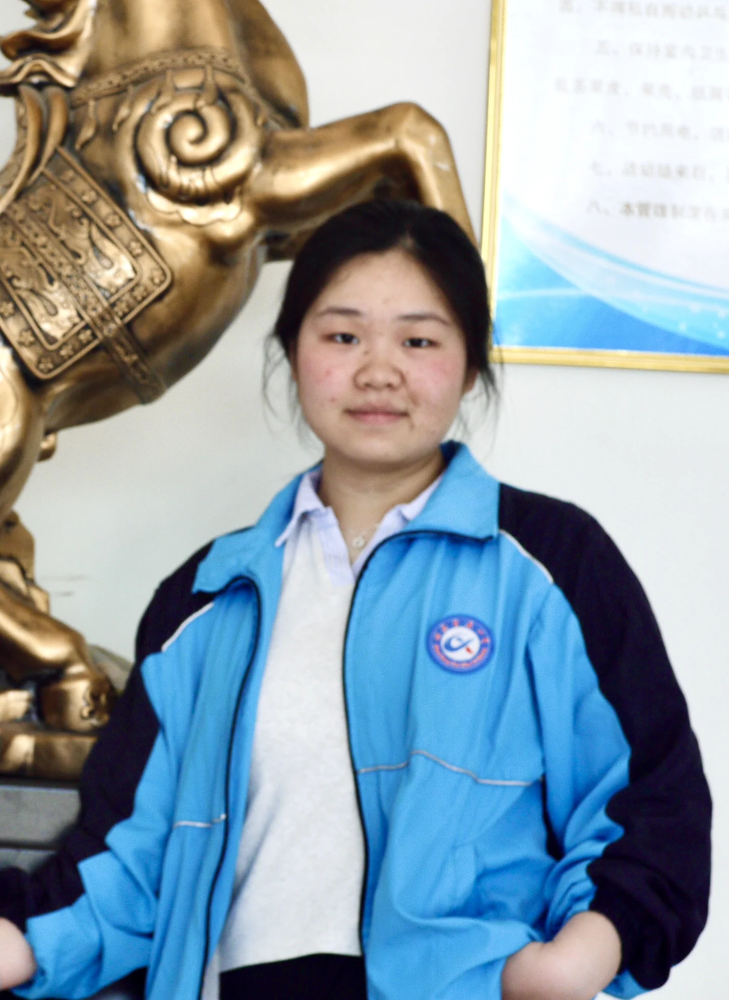

01
ABOUT THIS PAGE
一些关于
晓璐的瞬间
没有特意安排，只是把值得记住的光线、表情和日常，安静地放在这里。
02 / A CLOSER LOOK
镜头停在
这一秒
有些照片不需要解释。自然的动作，刚好的距离，就已经足够。
XIAO LU
03
SELECTED MOMENTS
日常，也值得被收藏
几帧光线，几次看向镜头。没有统一的主题，只有当时。
天气和心情，
都刚好。
04 / AMONG THE ROSES
花影
之间
阳光落在叶片上，也刚好落进这一张照片里。
05 / NOT THE END
TO BE CONTINUED
生活往前，记录也会慢慢增加。
回到开头